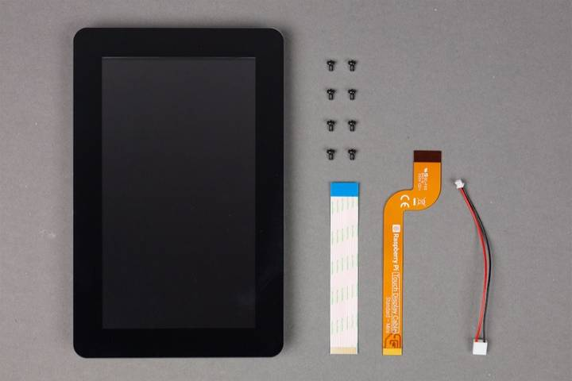

Touch Display 2 specifications
This section describes the characteristics and capabilities of Touch Display 2. We recommend that you check the cable regularly.
Features
Touch Display 2 has the following features:
- 720 x 1280 pixel resolution. High-definition output for 5-inch and 7-inch models.
- 1200 x 1920 pixel resolution. High-definition output for 10-inch model.
- 24-bit RGB display. Capable of showing over 16 million colours.
- Multitouch. Supports five-finger touch in 5-inch and 7-inch models, and ten-finger touch in the 10-inch model.
- Mouse-equivalence. Supports full desktop control without a physical mouse, for example, selecting, dragging, scrolling, and long-pressing for menus.
- On-screen keyboard. Supports an on-screen keyboard in place of a physical keyboard.
- Integrated power. Powered directly by the host device, requiring no separate power supply.
Dimensions
Touch Display 2 has the following dimensions:
| Touch Display 2 |
Depth |
Outline dimensions |
Viewing area |
Active area |
| 5-inch |
16 mm |
91.5 x 143.5 mm |
63 x 111.5 mm |
62 x 110.5 mm |
| 7-inch |
15 mm |
120 x 189.5 mm |
88 x 155.5 mm |
87 x 154.5 mm |
| 10-inch |
15.5 mm |
166.9 x 248.1 mm |
136.4 x 217.6 mm |
135.4 x 216.6 mm |
Hardware
Please note that the Touch Display 2 box contains the following:
| Touch Display 2 |
Screws |
Flat Flexible Cable |
GPIO Power Cable |
| 5-inch / 7-inch |
Eight M2.5 screws |
- 15-way to 15-way ( 4 and earlier)
- 22-way to 15-way Standard – Mini ( 5)
|
GPIO power cable |
| 10-inch |
- 22-way to 22-way Mini – Mini ( 5)
|

Figure 1. Parts included in the Touch Display 2 box for 5-inch and 7-inch models
Connections
| Touch Display 2 |
DSI Connector (carries video and touch data) |
GPIO Header (carries power) |
| 5-inch and 7-inch |
- 5 and later, and all CMIO Boards: supplied Standard – Mini 22-way to 15-way FFC
- 4 and earlier: supplied 15-way to 15-way FFC
|
Supplied GPIO power cable connects the GPIO header on the to the display. |
| 10-inch |
- 5 and later, and all CMIO Boards: supplied Mini – Mini 22-way to 22-way FFC
|